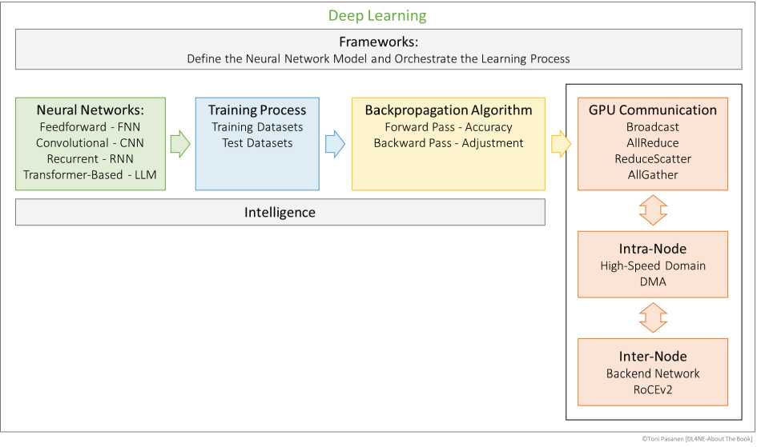

第1天 / 28第1周 · 深度学习入门 约50分钟
开营：网络工程师为什么要学深度学习
📖 对应 导读 About This Book + Ch1 引言
开营导览
10分钟
10分钟
DL是什么
15分钟
15分钟
为什么网工要学
15分钟
15分钟
明日预告+小测
10分钟
10分钟
🎯 今日目标
- 说出深度学习与传统机器学习的区别
- 理解本书两大部分结构（Ch1-8原理 / Ch9-14 AI数据中心网络）
- 建立4周学习节奏：每天45-60分钟
进度自动保存在本机
📖 细节讲解
1. 什么是深度学习？
作者 Toni Pasanen 开宗明义：深度学习就是用多层人工神经网络从数据中自动学特征。传统网络运维靠规则和阈值（比如 interface error 超过多少告警），而深度学习靠“数据+前向计算+反向纠错”自动调参。书中用柔道训练类比监督学习：教练先示范（标签），学员反复练习（迭代），教练纠正动作（计算误差、更新权重）。
2. 为什么网络工程师要关心？
三个现实推力：① AI训练产生巨大的东西向 RDMA 流量，对 lossless、低时延、负载均衡提出极端要求；② GPU 集群规模从几十卡到上万卡，拥塞、Hash极化、PFC风暴直接决定训练速度；③ 懂模型（数据并行/流水并行/Tensor并行）才能看懂流量模式（elephant flow、AllReduce 集合通信），才能设计 Rail-Spine Fabric。不会 DL 的网工，只能看到“丢包”，看不到“为什么这样丢”。
3. 本书结构与本课学习法
Part I（Ch1-8）：人工神经元→反向传播→多分类→CNN→RNN→LSTM→LLM/Transformer→并行策略，这是“看懂 AI 流量从哪来”。Part II（Ch9-14）：RDMA→Fabric挑战→拥塞避免→负载均衡→拓扑→NCCL通信模型，这是“网络如何承载 AI”。本课程每天拆 1 个小主题，配 2 张原书图 + 5 道强化题，学完打卡。
🖼️ 原书图解 + 解读（点击放大）

📖 原图 · About This Book p11 组织结构图 · 点击放大

📖 原图 · Ch1 p40 神经元与 Sigmoid · 点击放大
🌐 网络工程师视角：把训练类比成网络调优：前向像发包测试，Loss 像丢包率，反向像按 telemetry 调 QoS。学 DL 多问一句会产生什么网络流量。
✅ 课后强化（点选项即判分）
第1题 · 深度学习与传统规则式运维最大的区别是？
💡 解析：规则靠人写阈值，DL 靠数据+迭代自动调权重。（答案 B）
第2题 · 本书 Part I 和 Part II 分别是？
💡 解析：Ch1-8 原理，Ch9-14 网络承载。（答案 B）
第3题 · 监督学习中“标签”的作用最接近？
💡 解析：标签就是正确答案，用来算误差、纠动作。（答案 A）
第4题 · AI 训练对网络的核心新要求是？
💡 解析：RDMA 不能丢包，AllReduce 需要均衡低时延。（答案 B）
第5题 · 每天学习节奏建议是？
💡 解析：小步快跑 + 测验强化才是本课设计。（答案 B）
✍️ 动手任务
在纸上画出 Part I→Part II 地图，并写一句话：我学 DL 是为了解决网络中的哪个问题？